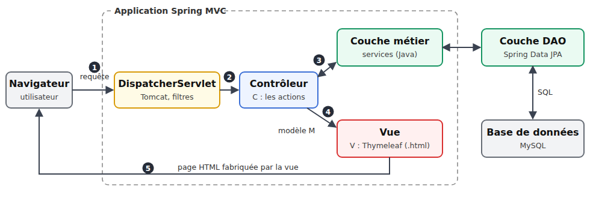
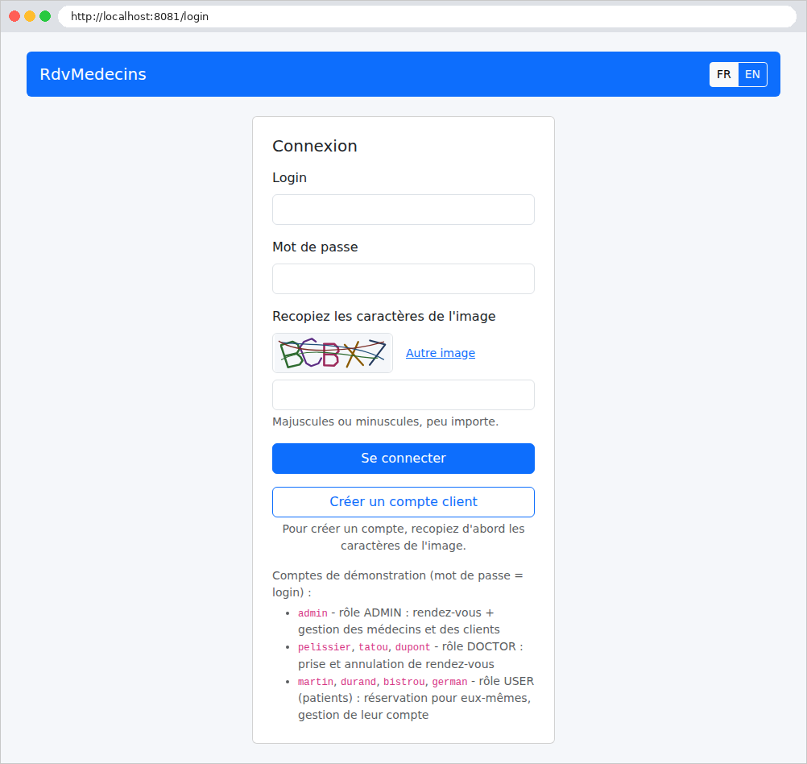

1. Introduction
Le PDF du document est |ICI|.
Les codes du document sont |ICI|.
Ce document est un produit de l'IA Claude d'Anthropic. Il fait suite au document Introduction étape par étape au framework web [ASP.NET Core MVC] (2026), qui faisait lui-même suite au document Introduction pas à pas au framework web [NestJS] (2026). Le présent document transpose le cours [ASP.NET Core MVC] dans le monde [Java] :
- le framework [ASP.NET Core MVC] et le langage [C#] sont remplacés par le framework [Spring MVC], avec [Spring Boot] 4, et le langage [Java] 21 ;
- les vues [Razor] sont remplacées par des vues [Thymeleaf] ;
- l'ORM [Entity Framework Core] est remplacé par [Spring Data JPA] et l'ORM [Hibernate], toujours avec une base [MySQL].
Le document suit exactement la progression du cours [ASP.NET Core MVC] : d'abord de nombreux petits projets, chacun centré sur une notion, puis une étude de cas complète, une application web de prise de rendez-vous pour un cabinet de médecins, dont tous les fichiers sont commentés. Les exemples portent les mêmes numéros et traitent les mêmes sujets que dans le cours [ASP.NET Core MVC] : un lecteur qui connaît ce cours peut comparer les deux frameworks exemple par exemple. Ce n'est pourtant pas nécessaire : ce document se lit seul, et ne suppose aucune connaissance d'[ASP.NET], ni d'ailleurs de [Spring]. On suppose seulement connues les bases de la programmation web (le protocole HTTP, le langage HTML) et celles du langage [Java].
1.1. La place de Spring MVC dans une application web
Une application web est souvent construite en couches, chaque couche ne parlant qu'à ses voisines :

- la couche web reçoit les requêtes HTTP du navigateur et lui renvoie des pages HTML. C'est elle que [Spring MVC] nous aide à écrire ;
- la couche métier contient les règles de gestion de l'application (« un patient ne peut avoir qu'un rendez-vous à venir », par exemple). Elle ignore tout du web : elle pourrait aussi bien servir une application en ligne de commande ;
- la couche d'accès aux données (couche [DAO], pour [Data Access Object]) lit et écrit dans la base de données. Nous utiliserons [Spring Data JPA], qui s'appuie sur l'ORM [Hibernate] ([Object Relational Mapper]) pour faire correspondre les lignes des tables et des objets [Java].
La couche web suit elle-même le modèle [MVC] ([Model – View – Controller]) :
- le contrôleur (C) est une classe dont les méthodes, appelées actions, traitent chacune un type de requête (par exemple [GET /agenda]). Une action lit les paramètres de la requête, fait travailler la couche métier, puis choisit la vue à afficher ;
- le modèle (M) est l'ensemble des données que l'action transmet à la vue ;
- la vue (V) est un fichier [Thymeleaf] (extension [.html]) : une page HTML dont certaines balises portent des attributs [th:...] ([th:text], [th:each]...), que le moteur [Thymeleaf] remplace par les données du modèle.
Le traitement d'une requête suit les étapes numérotées du schéma :
- 1 : le navigateur envoie une requête HTTP, par exemple [GET /agenda?idMedecin=1&jour=2026-09-24] ;
- 2 : le serveur web [Tomcat], embarqué dans l'application par [Spring Boot], reçoit la requête. Elle traverse une suite de filtres (lecture des cookies, authentification...), puis arrive au [DispatcherServlet], le point d'entrée unique de [Spring MVC], qui choisit l'action chargée de cette requête : c'est le routage. Avant d'arriver à l'action, la requête peut encore traverser des intercepteurs, que nous découvrirons au fil des chapitres ;
- 3 : l'action demande à la couche métier les données dont elle a besoin ; la couche métier s'adresse, si nécessaire, à la couche [DAO], qui interroge la base [MySQL] en SQL ;
- 4 : l'action construit le modèle M de la vue et désigne la vue qui doit l'afficher ;
- 5 : le moteur de vues [Thymeleaf] fabrique la page HTML, que [Spring MVC] renvoie au navigateur.
[Spring] est le framework le plus utilisé du monde [Java] pour écrire des applications d'entreprise. Gratuit et libre, il fonctionne partout où fonctionne [Java] ([Windows], [Linux], [macOS]). [Spring MVC] en est la partie web ; [Spring Boot] est une surcouche qui configure automatiquement l'ensemble (serveur web, conversion JSON, moteur de vues, accès aux données...) à partir des bibliothèques présentes dans le projet, et fait de l'application un programme [Java] ordinaire, lancé par une méthode [main]. [Spring MVC] sait fabriquer aussi bien des serveurs qui renvoient du JSON à un client [JavaScript] ([Angular], [React], [Flutter]...) que des applications web classiques, où c'est le serveur qui fabrique les pages HTML, le navigateur se contentant de les afficher. C'est ce second usage qu'étudie ce document. Comme [ASP.NET Core], [Spring] repose sur deux idées : des annotations ([@GetMapping], [@RequestMapping], [@PreAuthorize]...) décrivent le rôle des classes et des méthodes, et l'injection de dépendances fournit à chaque objet ceux dont il a besoin. [Spring] est d'ailleurs l'un des frameworks qui ont popularisé cette seconde idée.
1.2. Les outils utilisés
Les exemples ont été écrits et testés avec les outils suivants (leur installation est décrite en annexe) :
- le [JDK] 21 ([Java Development Kit]), qui contient le compilateur [javac] et la machine virtuelle [java]. [Java] 21 est une version LTS (support à long terme) ;
- l'outil de construction [Maven] 3.9.11, qu'il n'est pas nécessaire d'installer : chaque projet contient un Maven Wrapper (les scripts [mvnw] et [mvnw.cmd]), qui télécharge lui-même la bonne version de [Maven] à sa première utilisation ;
- l'éditeur [Visual Studio Code], avec les extensions [Extension Pack for Java] et [Spring Boot Extension Pack] ;
- un navigateur récent ([Chrome], [Firefox], [Edge]) ;
- l'outil en ligne de commande [curl], qui affiche les réponses HTTP brutes (il est livré avec [Windows] 10 et 11) ;
- le SGBD [MySQL] (ou [MariaDB]), par exemple celui de [Laragon] sous [Windows], à partir du chapitre sur l'accès aux données, et pour l'étude de cas.
Contrairement au SDK [.NET], qui contient [ASP.NET Core], le [JDK] ne contient pas [Spring] : le framework est un ensemble de bibliothèques, que [Maven] télécharge depuis le dépôt central [Maven Central] lors de la première compilation (il faut donc être connecté à Internet ce jour-là), puis garde dans un dossier local ([.m2] dans le dossier personnel de l'utilisateur). Ces bibliothèques sont regroupées en starters : un starter est une dépendance unique qui apporte tout ce qu'il faut pour une fonctionnalité. Tous les exemples utilisent [spring-boot-starter-webmvc] ([Spring MVC] et le serveur [Tomcat]) ; s'y ajoutent [spring-boot-starter-validation] (validation des données, à partir du chapitre 3), [spring-boot-starter-thymeleaf] (les vues, à partir du chapitre 4), [spring-boot-starter-security-oauth2-resource-server] ([Spring Security] et les jetons JWT, au chapitre 8), [spring-boot-starter-data-jpa] et le pilote [mysql-connector-j] (l'accès à la base, au chapitre 9). Les versions utilisées sont celles de [Spring Boot] 4.1.1 : [Spring Framework] 7.0.9, [Spring Security] 7.1.1, [Hibernate] 7.4.5, [Thymeleaf] 3.1.5, [Jackson] 3 (conversion JSON) et [Tomcat] 11.
1.3. Exécuter l'étude de cas
Note du réviseur : je conseille au lecteur d’exécuter immédiatement l’étude de cas comme il est indiqué dans ce qui suit. Une fois bien compris le rôle de cette application de rendez-vous, demander à son IA favorite de modifier l’application dans le sens suivant : désormais chaque médecin pourra :
- fixer lui-même les créneaux de consultation entre deux dates. Cela lui permettra de modifier ses horaires selon ses besoins ;
- supprimer dans l’agenda d’un jour donné certains créneaux : indisponible pour raisons personnelles par exemple ;
La modification n’est pas simple parce qu’elle implique un changement de structure de la base de données. Demandez à l’IA de vous fournir le nouveau code de l’application et le script SQL pour créer la nouvelle base de données. Pour cela, vous aurez besoin de lui fournir le zip du projet complet ainsi que le script SQL de l’ancienne base de données.
Par ailleurs, je n’ai pas révisé le cours produit par Claude. Il avait déjà produit des cours [NestJS] et [ASP.NET Core MVC] parfaits. J’ai supposé qu’il en était de même pour celui-ci. Si vous butez sur un obstacle de compréhension, la solution est toujours la même : demandez à votre IA favorite de vous expliquer ce que vous ne comprenez pas. Claude, par exemple, fait ça très bien. Vous aurez peut-être besoin de lui “uploader” l’exemple que vous ne comprenez pas.
Fin de note.
L'étude de cas qui termine ce document est une application complète. Le lecteur voudra sans doute la voir fonctionner avant d'entrer dans le détail du framework : voici comment l'exécuter. Elle se trouve dans le dossier [rdvmedecins2-spring-mvc], à côté du dossier [exemples] :
Il faut avoir installé le [JDK] 21, [Visual Studio Code] et [MySQL] (cf. annexes). [Maven] n'a pas besoin d'être installé. Puis :
- créer la base de données [dbrdvmedecins2], en exécutant le script [rdvmedecins2-spring-mvc/database/dbrdvmedecins2.sql]. Avec [Laragon], on ouvre l'outil [HeidiSQL] (bouton Base de données), puis on exécute le script par le menu Fichier / Exécuter un fichier SQL. En ligne de commande, depuis le dossier [rdvmedecins2-spring-mvc] :
- vérifier la connexion à la base. L'application se connecte à [MySQL] sur [localhost], port 3306, avec l'utilisateur [root] sans mot de passe (les réglages par défaut de [Laragon]). Si votre compte [root] a un mot de passe, indiquez-le dans le fichier [src/main/resources/application.properties] de l'application, à la ligne [spring.datasource.password=] (par exemple [spring.datasource.password=monMotDePasse]). Pour ne pas écrire de mot de passe dans un fichier du projet, on peut aussi le donner dans la variable d'environnement [SPRING_DATASOURCE_PASSWORD], qui l'emporte sur le fichier : [set SPRING_DATASOURCE_PASSWORD=monMotDePasse] sous [Windows] (invite de commandes), [export SPRING_DATASOURCE_PASSWORD=monMotDePasse] sous [Linux] et [macOS] ;
- ouvrir le dossier [rdvmedecins2-spring-mvc] dans [Visual Studio Code] (menu Fichier / Ouvrir le dossier), puis un terminal (menu Terminal / Nouveau terminal) ;
- lancer l'application, sous [Linux] et [macOS] :
et sous [Windows] :
- à la première exécution, le Maven Wrapper télécharge [Maven], puis [Maven] télécharge les bibliothèques de l'application, ce qui prend quelques minutes. L'application est ensuite compilée, puis démarrée. La console affiche la bannière de [Spring Boot], puis les messages de démarrage (nous n'en reproduisons que les principaux) :
Chaque ligne commence par la date et l'heure (remplacées ici par [...]), puis le niveau du message ([INFO], [WARN], [ERROR]), le numéro du processus et le nom du thread (remplacés eux aussi par [...]), enfin le nom, abrégé, de la classe qui écrit le message. On y lit que l'application tourne dans le profil [dev] (un ensemble de réglages propres au développement, qui affiche notamment les requêtes SQL), que le serveur [Tomcat] écoute sur le port 8081, que la connexion à la base a réussi (le « pool » de connexions [HikariCP] est prêt), et que l'application a déjà lu la liste des médecins et des clients (les deux requêtes SQL). Avec [MariaDB], [Hibernate] affiche aussi un avertissement [HHH000511], sans conséquence ;
- ouvrir l'adresse [http://localhost:8081] dans un navigateur :

- se connecter avec l'un des comptes de démonstration, dont le mot de passe est le login : [admin] (administrateur), [pelissier], [tatou], [dupont] (médecins), [martin], [durand], [bistrou], [german] (patients). Il faut aussi recopier les caractères de l'image, en majuscules ou en minuscules.
Au démarrage, l'application lit la base : si [MySQL] est inaccessible, elle s'arrête aussitôt, et la console indique pourquoi. Avec le message [Communications link failure] (ou [Connection refused]), c'est que [MySQL] n'est pas démarré ; avec [Access denied for user 'root'@'localhost'], que le mot de passe est incorrect ; avec [Unknown database 'dbrdvmedecins2'], que le script SQL n'a pas été exécuté ; avec [Port 8081 was already in use], que le port 8081 est déjà occupé (par la version [ASP.NET Core] de l'application, par exemple) ; avec [release version 21 not supported] (ou [invalid target release: 21]), que le [JDK] installé est antérieur à la version 21. Le fichier [README.md] de l'application décrit d'autres cas. On arrête l'application par [Ctrl-C] dans le terminal.
Le dernier chapitre du document présente l'utilisation de l'application, puis commente chacun de ses fichiers.
1.4. Les exemples
Les exemples sont rangés dans le dossier [exemples], un sous-dossier par exemple :
Chaque exemple est un projet [Maven], que l'on peut compiler et exécuter seul. Un projet [Maven] est décrit par un fichier [pom.xml] ([Project Object Model]) : son identité, les bibliothèques dont il dépend (ses dépendances), la façon de le construire. Les 28 projets sont les modules d'un projet parent, décrit par le fichier [exemples/pom.xml]. Les scripts [mvnw] ([Linux], [macOS]) et [mvnw.cmd] ([Windows]) sont le Maven Wrapper ; le fichier [.mvn/wrapper/maven-wrapper.properties] indique la version de [Maven] qu'il doit télécharger (3.9.11).
Le dossier [commun/bootstrap] contient le framework CSS [Bootstrap], partagé par les exemples qui mettent leurs pages en forme (à partir de l'exemple 15).
Chaque exemple a la structure standard d'un projet [Maven] :
- [src/main/java] : le code [Java], rangé en packages (les dossiers [exemple13], [exemple13/controllers]...). Un package [Java] joue le rôle d'un espace de noms [C#] ; le nom d'un package reprend le chemin de son dossier ([exemple13.controllers]) ;
- [Exemple13Application.java] : la classe de démarrage de l'application, qui contient la méthode [main] (cf. exemple 01) ;
- [controllers] : les contrôleurs ;
- [models] : les classes qui décrivent les modèles (des actions et des vues) ;
- [src/main/resources] : les fichiers qui ne sont pas du code [Java] ;
- [templates] : les vues [Thymeleaf] (à partir du chapitre 4) ;
- [application.properties] : la configuration de l'application (port d'écoute, puis, plus loin, connexion à la base de données...) ;
- [pom.xml] : le fichier projet, qui décrit comment construire l'application.
À la compilation, [Maven] crée dans chaque exemple un dossier [target], où il range les classes compilées ; on peut le supprimer sans risque.
Pour exécuter un exemple, on ouvre un terminal sur son dossier (dans [Visual Studio Code] : clic droit sur le dossier de l'exemple, puis Ouvrir dans le terminal intégré) et on tape, sous [Linux] et [macOS] :
et sous [Windows] :
Le Maven Wrapper se trouve dans le dossier [exemples], parent du dossier de l'exemple : d'où le [../] (ou [..\]). La commande [spring-boot:run] compile l'exemple (dans son dossier [target]), puis lance l'application. Tous les exemples écoutent sur le port 5000 : on ne peut en exécuter qu'un à la fois. On arrête le serveur par [Ctrl-C] dans le terminal. On peut aussi compiler tous les exemples d'un coup, depuis le dossier [exemples], pour vérifier que l'installation est complète :
([mvnw compile] sous [Windows]).
Quand on ouvre le dossier [exemples] dans [Visual Studio Code], l'extension [Extension Pack for Java] trouve le fichier [pom.xml] parent et importe tous les modules (ils apparaissent dans le volet « Java Projects ») : on bénéficie alors, dans chaque fichier, de la coloration syntaxique, de la complétion et du signalement des erreurs. Avec ses réglages par défaut, elle compile aussi chaque fichier [.java] dès qu'on l'enregistre. L'extension [Spring Boot Extension Pack] ajoute un volet « Spring Boot Dashboard », qui liste les applications trouvées et permet de les lancer ou de les arrêter sans passer par le terminal (l'aspect exact de ces volets dépend de la version des extensions). Enfin, tous les exemples dépendent de [Spring Boot DevTools] (cf. plus bas) : une application lancée redémarre toute seule, en une ou deux secondes, dès que l'une de ses classes est recompilée. Avec [Visual Studio Code], il suffit donc en principe d'enregistrer un fichier modifié pour que l'application en tienne compte.
Le fichier [pom.xml] du projet parent [exemples/pom.xml] :
Commentons ce fichier :
- lignes 14-19 : le projet parent hérite lui-même d'un parent, [spring-boot-starter-parent], version 4.1.1. C'est lui qui fixe les versions de toutes les bibliothèques de [Spring] et des bibliothèques qu'elles utilisent, choisies pour fonctionner ensemble : c'est pourquoi aucune dépendance n'indique de version dans la suite. Il règle aussi la compilation (encodage UTF-8 des sources, version de [Java]...). L'élément vide [<relativePath/>] indique que ce parent n'est pas un dossier voisin, mais doit être cherché dans les dépôts [Maven] ;
- lignes 22-24 : l'identité du projet : un groupe ([groupId]), un nom ([artifactId]) et une version. C'est par cette identité que les modules désignent leur parent ;
- ligne 26 : un projet de type [pom] ne produit ni classe ni archive : il regroupe des modules et leur transmet ses réglages ;
- lignes 28-31 : la version de [Java] visée : [Java] 21 ;
- lignes 34-63 : les modules, un par exemple : le nom de leur dossier. Une commande [Maven] lancée dans le dossier [exemples] s'applique à tous les modules ;
- lignes 66-78 : les dépendances communes à tous les exemples, héritées par chaque module ;
- lignes 68-71 : le starter [spring-boot-starter-webmvc] apporte [Spring MVC], le serveur web [Tomcat], embarqué dans l'application (il n'y a pas de serveur à installer), et la bibliothèque [Jackson], qui convertit les objets [Java] en JSON ;
- lignes 73-77 : [Spring Boot DevTools], les outils de développement : redémarrage automatique de l'application quand une classe est recompilée, désactivation des caches (celui des vues, par exemple), messages d'erreur plus détaillés. Ils ne servent qu'au développement : le plugin de [Spring Boot] (lignes 80-88) ne les met pas dans l'archive exécutable ([.jar]) destinée à la production, et ils se désactivent d'eux-mêmes si l'application est lancée par [java -jar] ;
- lignes 80-88 : le plugin [Maven] de [Spring Boot]. C'est lui qui fournit la commande [spring-boot:run], ainsi que la fabrication d'une archive exécutable ([mvnw package]).
Le fichier [pom.xml] d'un exemple est très court. Par exemple [01-structure/pom.xml] :
- lignes 6-10 : le parent : le projet [exemples], désigné par son identité. Le module hérite de ses dépendances, de ses réglages et, par lui, de ceux de [spring-boot-starter-parent] ;
- ligne 11 : le nom du module. Son groupe et sa version sont ceux du parent.
Un exemple qui a besoin d'une bibliothèque de plus la déclare dans son propre [pom.xml]. Par exemple [13-premiere-vue/pom.xml], qui utilise le moteur de vues [Thymeleaf] :
- lignes 3-6 : une dépendance est désignée par son groupe et son nom ; sa version est fixée par [spring-boot-starter-parent].
Le fichier [src/main/resources/application.properties] commence de la même façon dans tous les exemples :
- ligne 2 : le port d'écoute du serveur. Sans cette ligne, [Spring Boot] écouterait sur le port 8080 ; nous avons choisi le port 5000, celui du cours [ASP.NET Core MVC] ;
- ligne 4 : quand une requête échoue, [Spring Boot] renvoie une réponse d'erreur (nous la verrons dès le chapitre suivant). Ce réglage garantit qu'elle ne contient jamais la pile d'appels (la liste des méthodes en cours d'exécution au moment de l'erreur), qui renseignerait un attaquant sur le code de l'application.
Chaque ligne est de la forme [clé=valeur] ; les lignes qui commencent par [#] sont des commentaires. Certains exemples ajoutent leurs propres clés à la suite de ces deux lignes.
Enfin, les exemples qui utilisent [Bootstrap] le trouvent dans le dossier [commun/bootstrap], et non dans leur propre dossier : le fichier n'existe ainsi qu'en un exemplaire. Chacun de ces exemples a une classe de configuration qui sert ce dossier sous l'URL [/bootstrap/...]. Par exemple [15-gabarit/src/main/java/exemple15/config/WebConfig.java] :
- lignes 8-9 : une classe de configuration de [Spring MVC] (les exemples 06 et 12 expliqueront ce mécanisme) ;
- lignes 14-18 : les URL qui commencent par [/bootstrap/] sont servies à partir du dossier [../commun/bootstrap/], relatif au dossier courant, c'est-à-dire au dossier de l'exemple quand on le lance comme indiqué plus haut. Une page peut ainsi utiliser la feuille de style [/bootstrap/css/bootstrap.min.css]. Le second dossier, [commun/bootstrap/], sert quand l'application est lancée depuis le dossier [exemples], et non depuis celui de l'exemple.
1.5. Contenu du document
Le document progresse ainsi :
Chapitre | Contenu | Exemples |
Contrôleurs, actions, routage | du navigateur à l'action : routes, réponses, redirections, services et injection de dépendances | 01 à 06 |
Le modèle d'une action | les paramètres de la requête : liaison, conversion, validation, formulaires POST | 07 à 12 |
La vue et son modèle | Thymeleaf, gabarit, fragments, formulaires, validation, PRG | 13 à 21 |
Internationalisation | une application en français et en anglais | 22 |
Portées des données | application, requête, session, client | 23 |
Le cycle de vie d'une requête | filtres de servlet, intercepteurs, [@ControllerAdvice], liaison de modèle, page d'erreur | 24 |
Authentification et autorisation | Spring Security, JWT dans un cookie, rôles, captcha, limitation des tentatives | 25 à 27 |
Architecture en couches | web / métier / DAO avec Spring Data JPA et MySQL | 28 |
Étude de cas | l'application RdvMedecins, commentée fichier par fichier | - |
Chaque exemple introduit peu de nouveautés, et les chapitres s'appuient les uns sur les autres : il est préférable de les lire dans l'ordre. L'étude de cas, elle, réutilise toutes les notions des chapitres précédents : chaque fois que c'est utile, son commentaire renvoie à l'exemple où la notion a été présentée. Les annexes décrivent l'installation des outils : le [JDK] 21, [Visual Studio Code] et ses extensions, le Maven Wrapper, [MySQL] avec [Laragon], et [curl].